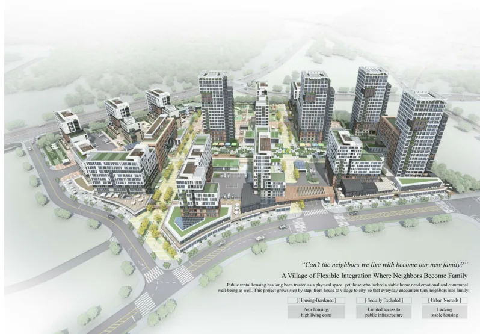
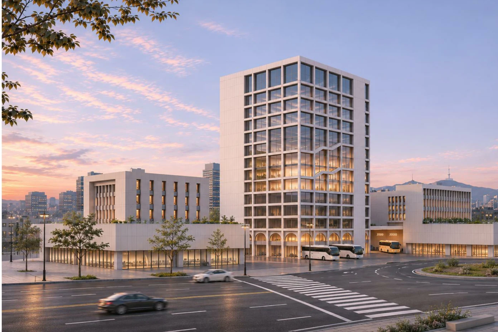
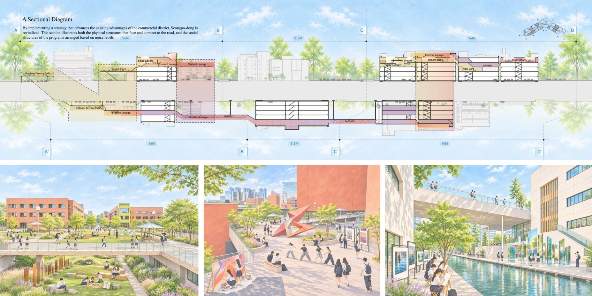
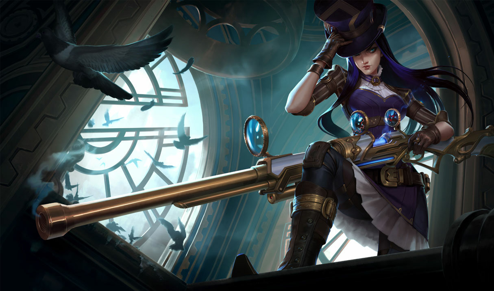

FIGURE SKATING · SINCE SEP 2021
LIFE
ON ICE.
I started figure skating as an adult and take lessons at Blue Ice Skating Rink in Johor Bahru while living in Singapore.
ARCHITECTURAL DESIGNER · SINGAPORE
MORE THAN ONE DIMENSION.
I design spaces, with a background in public housing and design competitions. Off the drawing board, I skate, game and make things for the web.
ARCHITECTURE PORTFOLIO
Public housing, education and community projects in South Korea, from the first competition sketch through planning and technical design.

FEATURED WORK · FIRST PRIZE, 2023
A public housing proposal for 1,433 homes. A shared pedestrian loop links three neighbourhood clusters.

Remodeling an Abandoned BuildingAcademic · Adaptive reuse
Seongpo Yesullo Revival ProjectAcademic · Public realmHanam Gyosan A5BL · Ansan Jangsang A4BL · Namyangju Yangjeong S10BL · Goyang Tanhyeon A1BL · Barun Kindergarten / Elementary School
The teams’ winning projects were associated with over S$21.3 million in consultancy awards. At Namyangju Yangjeong S10BL, 78 of 83 value engineering proposals were accepted.
View academic portfolio PDFYOURIN JEONG · LYNN · 정유린
I studied architecture at Hanyang University ERICA’s five-year B.Arch. programme and spent Fall 2018 at the National University of Singapore. After working in South Korea, I moved to Singapore in 2024.
“The AutoCAD Pianist” came from working fast with shortcuts. “The Idea Bank” came from sketching several ways through the same design problem.
AutoCAD · AutoLISP · Rhino · SketchUp · Photoshop · Illustrator · V-Ray · Lumion · Enscape. Academic experience with Revit.
Korean · English · Basic Japanese
Masterplanning, unit layouts, façades and community facilities, followed by structural and MEP coordination, code review and value engineering.
LIFE OUTSIDE PRACTICE
LEAGUE OF LEGENDS
Playing since 2013. ADC main, Diamond IV peak. Qualified for the 2019 Ladies League main event as a top laner.

BOT LANE / ADC
The Sheriff of Piltover
This fan section was created under Riot Games’ Legal Jibber Jabber policy using assets owned by Riot Games. Riot Games does not endorse or sponsor this project.
FIGURE SKATING · SINCE SEP 2021
I started figure skating as an adult and take lessons at Blue Ice Skating Rink in Johor Bahru while living in Singapore.
ADULT BALLET · SINCE SEP 2026
Ballet came after skating. I’m learning the basics at the barre, getting to know how posture and timing change the same movement.
INDEPENDENT CREATIVE PROJECT
A space for graphics, photography, everyday finds, food and short-form video. It follows my work as a visual designer at SUNSAVE and more than 420 hours of live streaming on Twitch.
Find momoog on InstagramDIGITAL LAB
I use AutoLISP to cut repetitive drafting work, make interactive calculators and dashboards, and explore SQL, Python and data visualisation.
GAME INPUT VISUALISER · DEMO
Press Q, W, E or R on your keyboard, or tap a key below.
BASED IN SINGAPORE
Open to conversations about architectural design, creative collaborations and professional opportunities.